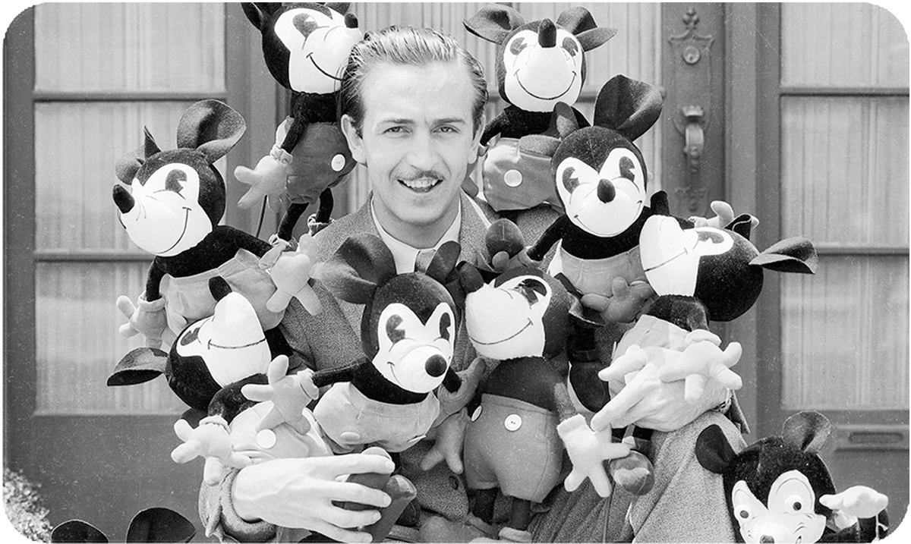

History
In 1921, American animators Walt Disney and Ub Iwerks founded Laugh-O-Gram Studio in Kansas City, Missouri. Iwerks and Disney went on to create short films at the studio. The final one, in 1923, was entitled Alice's Wonderland and depicted child actress Virginia Davis interacting with animated characters. While Laugh-O-Gram's shorts were popular in Kansas City, the studio went bankrupt in 1923 and Disney moved to Los Angeles, to join his brother Roy O. Disney, who was recovering from tuberculosis. Shortly after Walt's move, New York film distributor Margaret J. Winkler purchased Alice's Wonderland, which began to gain popularity. Disney signed a contract with Winkler for $1,500, to create six series of Alice Comedies, with an option for two more six-episode series. Walt and Roy Disney founded Disney Brothers Cartoon Studio on October 16, 1923, to produce the films. In January 1926, the Disneys moved into a new studio on Hyperion Street and the studio's name was changed to Walt Disney Studio.
After producing Alice films over the next 4 years, Winkler handed the role of distributing the studio's shorts to her husband, Charles Mintz. In 1927, Mintz asked for a new series, and Disney created his first series of fully animated shorts, starring a character named Oswald the Lucky Rabbit. The series was produced by Winkler Pictures and distributed by Universal Pictures. The Walt Disney Studios completed 26 Oswald shorts.

According to Walt, he first had the idea of building an amusement park during a visit to Griffith Park with his daughters. He said he watched them ride a carousel and thought there "should be ... some kind of amusement enterprise built where the parents and the children could have fun together".[87][88] Initially planning the construction of an eight-acre (3.2 ha) Mickey Mouse Park near the Burbank studio, Walt changed the planned amusement park's name to Disneylandia, then to Disneyland. A new company, WED Enterprises (now Walt Disney Imagineering), was formed in 1952 to design and construct the park. Drawing inspiration from amusement parks in the US and Europe, Walt approached the design of Disneyland with an emphasis on thematic storytelling and cleanliness, innovative approaches for amusement parks of the time. The plan to build the park in Burbank was abandoned when Walt realized 8 acres would not be enough to accomplish his vision. Disney acquired 160 acres (65 ha) of orange groves in Anaheim, southeast of LA in neighboring Orange County, at $6,200 per acre to build the park.[93] Construction began in July 1954.